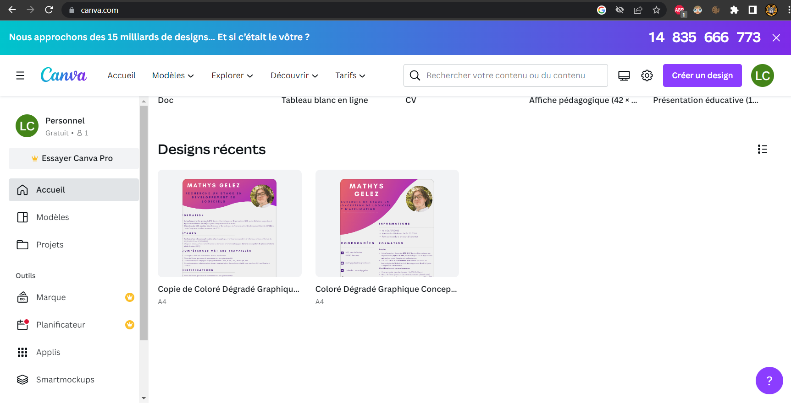
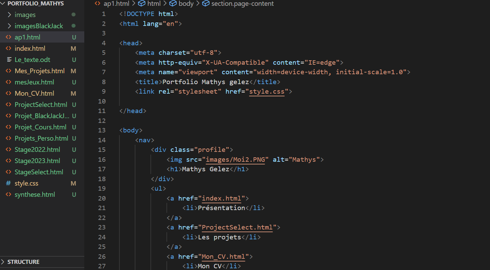
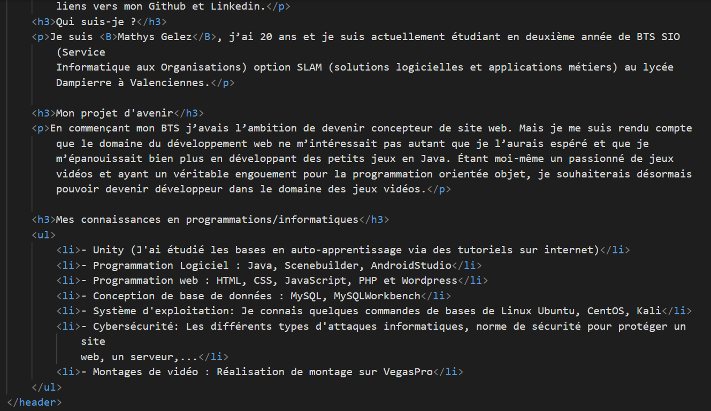
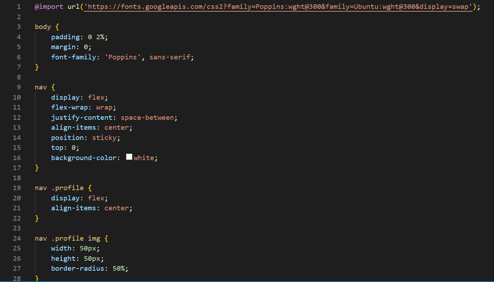

AP1: Réalisation CV et Portfolio
Objectif
Avoir un CV et un Portfolio régulièrement à jour est important. Ces deux éléments à jour permettent de mettre en avant son créateur et de montrer les véritables atouts dont il dispose pour être à la hauteur d'une formation ou d'un poste dans une entreprise.
La réalisation du CV
La réalisation d'un CV ne se fait plus vraiment comme avant. Fini les CV écrit à la main et le minimalisme, désormais les CV sont numérisés et moderne.
Afin d'avoir un CV assez joli sans avoir de difficulté avec la mise en page et l'encodage de document, j'ai décidé d'utiliser le site "Canvas.com", qui permet de réaliser sans trop de difficulté de beaux CV en s'appuyant sur des templates réadaptables aux besoins. Ainsi j'ai pu le réaliser, le modifier en prenant en compte des conseils de mes enseignants, et l'enregistrer sous plusieurs formats notamment en PNG pour pouvoir le faire apparaître sur mon portfolio.
Le site Canvas:
La réalisation du Portfolio
Le portfolio est un atout indispensable pour trouver du travail et un portfolio permet, à travers le format web, d'apporter encore plus d'informations à son sujet tout en l'illustrant et en démontrant notre savoir faire.
Il existe de nombreuses manières de créer et héberger notre portfolio sans avoir forcèment à dépenser de l'argent. Au début je voulais avoir recourt à 000webhost, un service en ligne qui permet d'héberger son portfolio sur un serveur et de le créer et modifier à distance par Wordpress. Cela me semblait être une bonne idée de part la facilité à mettre les choses en place et les fonctionnalités suffisantes qu'apporte l'offre gratuite. Mais les problèmes d'accès que j'ai rencontrés et les risques que tout soit archivé définitivement étaient trop risqués.
Ainsi j'ai préféré me tourner vers quelque chose que je connaissais déjà : Github. Avec Github j'ai pu effectuer un repository qui permet de contenir tous mes fichiers web (html et css) et rendre mon portfolio statique visible par un lien github 24h/24. Ainsi je ne peux pas avoir recours à un cms comme Wordpress. Le portfolio que vous avez actuellement sous les yeux a été intégralement codé par moi-même avec mon savoir faire et quelques éléments dont je me suis inspiré d'internet.
Quelques captures de mon code:
Mon en-tête:

Ma page d'accueil:
Mon fichier CSS:
